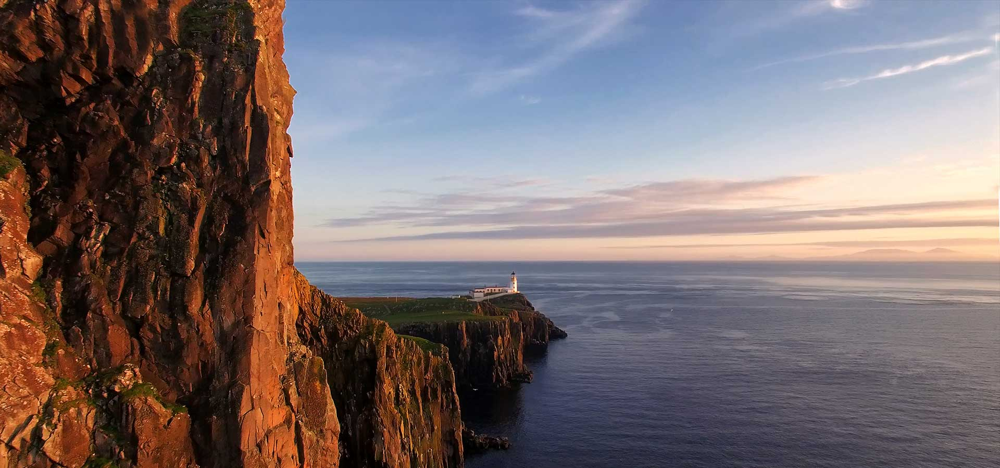

Pick Your perfect Tour and Enjoy!
Boat excursion Antonio is the best way to discover the Istrian peninsula. On the board with a seating capacity of 12 passengers, you will enjoy the perfect holiday experience. Go on a boat excursion and visit Brijuni Islands or enjoy the unique experience of observing the dolphins in their natural habitat, taking in spectacular views on the way. The prices include food and drinks on board, children get 50% discount and the youngest ones, up to 3 years old, travel for free. Send us an inquiry and reserve your seat at one of our many boat excursions. Don't forget your camera, sun cream, and swimwear, and get ready for a memorable holiday experience! Favorable prices, professional and cheerful staff are a guarantee for good fun. Send us an inquiry and reserve your place on our boat, we will make your vacation in Istria special, and present the coast from a new perspective to the local population. We are located right across from the famous Shipyard Pub which gathers a large number of people in the evening, organizes concerts and parties, so it can be said that we are in the center of good entertainment.
⚓️ Private Boat Excursion ⚓️
🌅 Sunset finds dolphins 🐬
🌊 Swimming, jumping, snorkeling 🤿
⛴️ Panoramic tour of Brijuni National Park 📸
✅️ For more information contact us 📲
+385 91 918 0266